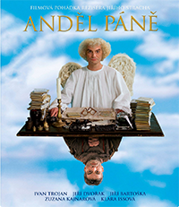

Anděl Páně (č:2002)
Obsah:

Příběh anděla Petronela a čerta Uriáše, kteří jsou za trest Bohem poslání na pozemský svět, aby Petronel napravil alespoň jednoho hříšníka. Vše se odehrává v období Vánoc a na splnění úkolu má pouze 1 den, jinak z něj bude padlý anděl. Zvládne splnit tento úkol, když nezná pozemský život?
Režie a scénář:
Jiří Strach, Lucie Konášová
Kamera:
Petr Polák
Hrají:
Ivan Trojan, Jiří Dvořák, Jiří Bartoška, Zuzana Kajnarová, David Švehlík a další.